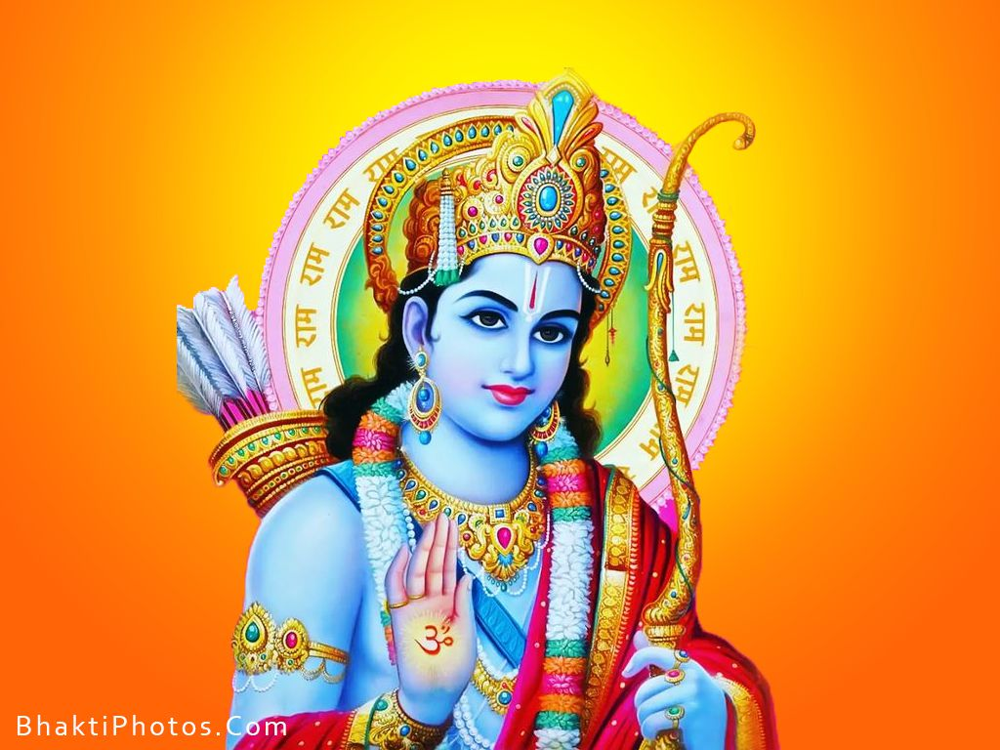

About

Lord Ram
Lord Rama is known as the seventh incarnation of Lord Vishnu. Rama, the perfect avatar of the Supreme Protector Vishnu, has always been popular among the Hindu deities. Rama is the symbol of courtesy and virtue, a man of values and morals. Ramachandra is Maryada Purushottama, which means the perfect man. Lord Rama is considered to have taken birth on the earth to destroy the evil forces of the age.
Lord Rama, in the words of Swami Vivekananda, is "the embodiment of truth, of morality, the ideal son, the ideal husband, and above all, the ideal king". Rama is widely accepted to be an actual historical figure - a "tribal hero of ancient India" - whose deeds form the great Hindu epic of Ramayana or The Romance of Rama, written by the ancient Sanskrit poet Valmiki. According to the Hindus belief, Rama lived in the Treta Yug. Although historians are of the conviction that Rama was not particularly deified until the 11th century AD. Tulsidas' wonderful version of the Sanskrit epic "Ramayana" into "Ramcharitmanas" greatly enhanced the popularity of Rama as a Hindu god and gave rise to various devotional groups.
Virtues of Rama
Shri Rama was a paragon of virtues. Rama was not only kind and affectionate but generous and considerate of feelings for all around him. Lord Rama had a marvelous physique and captivating manners. Shri Ram had a magnanimous personality. He was extremely noble, generous, chivalrous and fearless. He was very simple and absolutely free from flamboyance.
Lord Rama is considered as a son unequalled in the world, and resembled Dasaratha in each and every aspect of good qualities. He never spoke a lie throughout his life. He always offered respect to the scholars and the elders, people loved him and he adored the people. His body was transcendental and outstanding. He was eloquent, attractive and adjustable to circumstances. He knew the heart of each and every human being on the earth (being omniscient). He had all the conceivable qualities of a king's son and was dear to the people as their own hearts.
Lord Rama was endowed with incredible transcendental qualities. The earth personified adored him, who was possessor of such virtues, who was indomitable, who was brave, and who was the unequalled Lord of all. To put succinctly, Sri Rama's life was a life of holy compliance, of stainless purity, of matchless simplicity, praiseworthy contentment, commendable self-sacrifice and remarkable renunciation.
The ancient epic Ramayana states in the Balakhanda that Rama and his brothers were born to Kaushalya and Dasharatha in Ayodhya, a city on the banks of Sarayu River. The Jain versions of the Ramayana, such as the Paumacariya (literally deeds of Padma) by Vimalasuri, also mention the details of the early life of Rama. The Jain texts are dated variously, but generally pre-500 CE, most likely sometime within the first five centuries of the common era. Moriz Winternitz states that the Valmiki Ramayana was already famous before it was recast in the Jain Paumacariya poem, dated to the second half of the 1st century CE, which pre-dates a similar retelling found in the Buddha-carita of Asvagosa, dated to the beginning of the 2nd century CE or prior.[37]
Dasharatha was the king of Kosala, and a part of the solar dynasty of Iksvakus. His mother's name Kaushalya literally implies that she was from Kosala. The kingdom of Kosala is also mentioned in Buddhist and Jain texts, as one of the sixteen Maha janapadas of ancient India, and as an important center of pilgrimage for Jains and Buddhists.However, there is a scholarly dispute whether the modern Ayodhya is indeed the same as the Ayodhya and Kosala mentioned in the Ramayana and other ancient Indian texts.
Exile & War
Rama heads outside the Kosala kingdom, crosses Yamuna river and initially stays at Chitrakuta,
on the banks of river Mandakini, in the hermitage of sage Vasishtha. During the exile, Rama
meets one of his devotee, Shabari who happened to love him so much that when Rama asked something
to eat she offered her ber, a fruit. But every time she gave it to him she first tasted it to
ensure that it was sweet and tasty as a testament to her devotion. Rama also understood her
devotion and ate all the half-eaten bers given by her. Such was the reciprocation of love and
compassion he had for his people. This place is believed in the Hindu tradition to be the same
as Chitrakoot on the border of Uttar Pradesh and Madhya Pradesh. The region has numerous Rama
temples and is an important Vaishnava pilgrimage site.The texts describe nearby
hermitages of Vedic rishis (sages) such as Atri, and that Rama roamed through forests,
lived a humble simple life, provided protection and relief to ascetics in the forest being
harassed and persecuted by demons, as they stayed at different ashrams.
After ten years of wandering and struggles, Rama arrives at Panchavati, on the banks of river Godavari.
This region had numerous demons (rakshashas). One day, a demoness called Shurpanakha saw Rama, became
enamored of him, and tried to seduce him. Rama refused her. Shurpanakha retaliated by threatening Sita.
Lakshmana, the younger brother protective of his family, in turn retaliated by cutting off the nose and ears
of Shurpanakha. The cycle of violence escalated, ultimately reaching demon king Ravana, who was the brother
of Shurpanakha. Ravana comes to Panchavati to take revenge on behalf of his family, sees Sita, gets
attracted, and kidnaps her to his kingdom of Lanka (believed to be modern Sri Lanka).
Rama and Lakshmana discover the kidnapping, worry about Sita's safety, despair at the loss and their lack of
resources to take on Ravana. Their struggles now reach new heights. They travel south, meet Sugriva, marshall
an army of monkeys, and attract dedicated commanders such as Hanuman who was a minister of Sugriva.
Meanwhile, Ravana harasses Sita to be his wife, queen or goddess. Sita refuses him. Ravana gets enraged
and ultimately reaches Lanka, fights in a war that has many ups and downs, but ultimately Rama prevails,
kills Ravana and forces of evil, and rescues his wife Sita. They return to Ayodhya
Ramayana
The Ramayana is an ancient Sanskrit epic which follows Prince Rama's quest to rescue his beloved wife Sita from the clutches of Ravana with the help of an army of monkeys. It is traditionally attributed to the authorship of the sage Valmiki and dated to around 500 BCE to 100 BCE.
Comprising 24,000 verses in seven cantos, the epic contains the teachings of the very ancient Hindu sages. One of the most important literary works of ancient India, it has greatly influenced art and culture in the Indian subcontinent and South East Asia, with versions of the story also appearing in the Buddhist canon from a very early date. The story of Rama has constantly been retold in poetic and dramatic versions by some of India's greatest writers and also in narrative sculptures on temple walls. It is one of the staples of later dramatic traditions, re-enacted in dance-dramas, village theatre, shadow-puppet theatre and the annual Ram-lila (Rama-play).
Origins
The original five books of an oral epic of local northern significance dealing with a hero and his exile, the abduction of his wife by a rival king and her rescue became conflated into seven books in which the hero Rama became an avatar of the god Vishnu, the scene shifted to encompass the whole of India, and the struggle to recover his wife became a metaphor for the final triumph of the righteous.